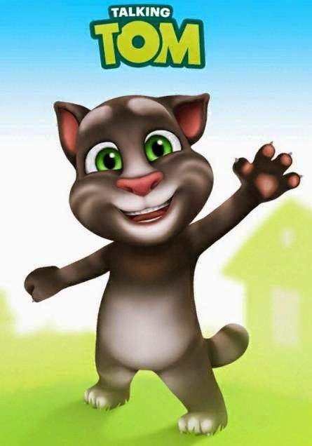
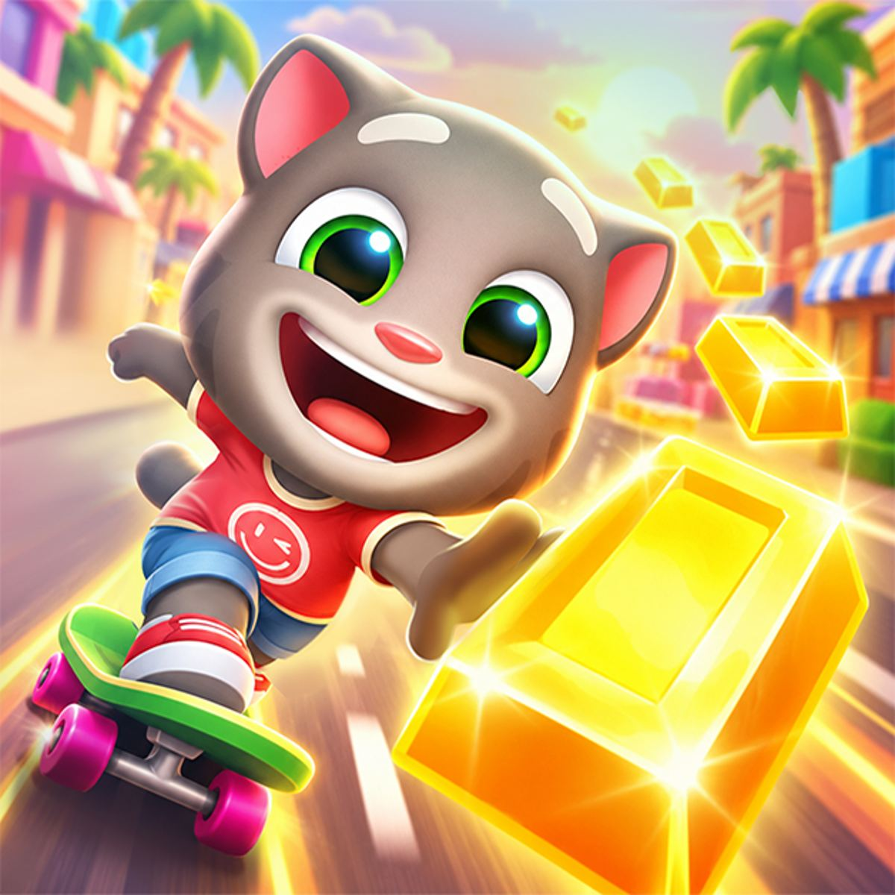
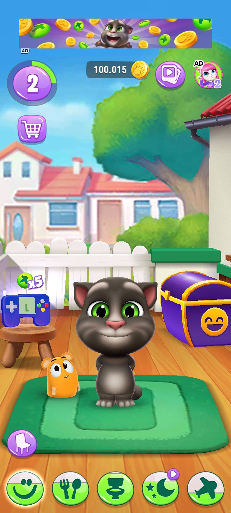

Gato Tom es un divertido juego inspirado en el clásico personaje del gato Tom. Nació como un juego casual para todas las edades donde el jugador controla a Tom en diferentes aventuras llenas de acción, persecuciones y momentos cómicos.

El objetivo principal es ayudar a Tom a completar misiones, atrapar ratones, evitar obstáculos y recolectar puntos. Usa las flechas del teclado o los controles táctiles para mover a Tom, saltar y realizar combos especiales.

• Gráficos coloridos y animaciones fluidas
• Varios niveles con dificultad creciente
• Power-ups y habilidades especiales de Tom
• Ideal para jugar solo o en modo competitivo
